BAW Configuration
Add a BAW server
-
Click the Administrator tab, then switch to the BAW Configuration tab to manage the BAW server.
-
Click the
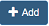
icon on the right of BAW Server Configuration to add a new BAW server. -
Fill out the form below. Then click the Create button. Optional fields are hidden inside the Auth Configuration and SSH Configuration section. Click Auth Configuration or SSH Configuration to show them.
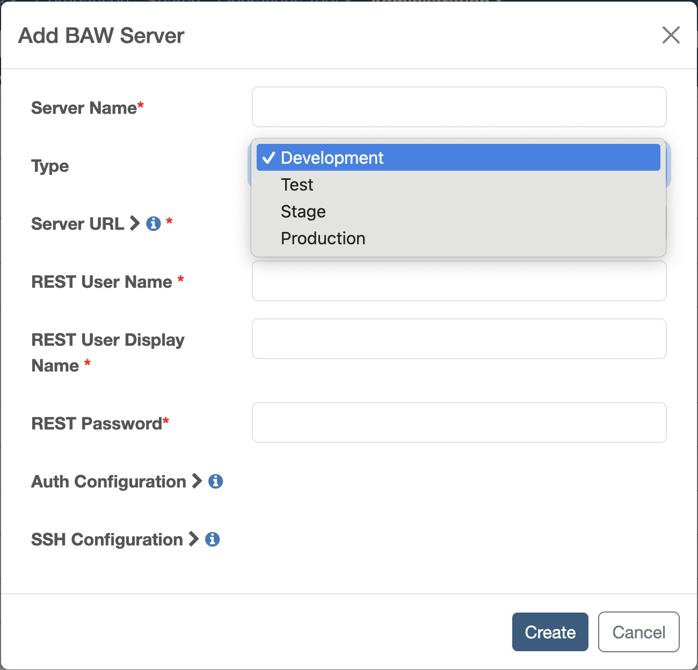
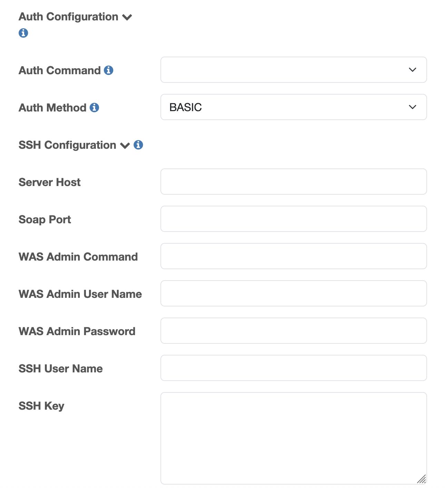
Field Description Server Name The display name of this BAW server. Type Options: Development, Test, Stage, Production. If the BAW server is Process Center, please select Development. If your server is Process Server, you should choose Test, Stage or Production, depending on your actual environment. Server Url The BAW server URL, e.g., https://bawserver:9443. It is the prefix of the BAW Process Admin URL or Process Portal URL. In a BAW HA environment, this field should be the URL of the load balancer. REST User Name The name of the user who is a member of the tw_admins or tw_authors group and has the Read permission to the target process application (If you want to catch a new snapshot for this process application in IDA, for example, Trigger by new Snapshot, you need to have the Write permission to the process application). REST Password The password of the user. Auth Command Choose the custom Java command that can automate the custom SSO page of the BAW server 1. Auth Method When the BAW server doesn’t support BASIC Authentication, please set the authentication method to OTHER. Connected PS Server The Connected Server Name is the online PS server name. Authorized users can install snapshots of process applications on connected Process Servers. This field only needs to be filled when this server is a Process Server and is connected to the Process Center. It can be obtained from the Process Center under the Servers tab. 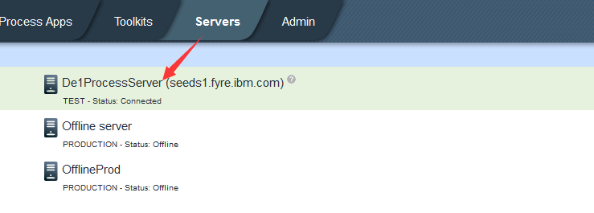
.Server Host The BAW server host, the IP or the hostname of the Process Server. It is used for snapshot deployment from PC to PS. In a BAW HA environment, you can get this value from one of the application cluster members. SOAP port The SOAP port ID defined in the WebSphere console. To determine the correct port number, see the WebSphere administrative console Ports collection page (click Servers > Server Types > WebSphere application servers > server_name > Communications > Ports and find the value for SOAP_CONNECTOR_ADDRESS). In a BAW HA environment, use the port configured for the application cluster member. WAS admin Command It is the path of wsadmin.sh on the Linux server. In a BAW HA environment, use the path of wsadmin.sh in the application cluster member. WAS Admin username The name of the WebSphere Administrative user who can log in to the WebSphere console and manage the product resources and user accounts in WebSphere Application Server. In a BAW HA environment, use the WebSphere Admin user configured for the application cluster member. WAS Admin password The password of the WebSphere admin user. SSH User Name The user who can access PC and PS by SSH key. This field is used for snapshot deployment from PC to PS. This user should have permission to execute wsadmin.sh. In a BAW HA environment, use the SSH user configured for the application cluster member. SSH key Used for snapshot deployment from PC to PS. The way to generate an SSH key is here: Link.
Notes: If you log in and get a 401 unauthorized error, please check if your function ID belongs to the tw_admins (administrative access) and tw_authors (non-administrative access) groups.
Edit a BAW server
-
Click the Edit icon on the right of the BAW server that you want to edit.
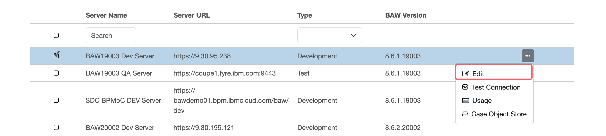
-
Change the configurations of the BAW server. Then click Save.
Delete a BAW server
Select the servers in the BAW Configuration table, then click the Delete icon to delete the BAW server.
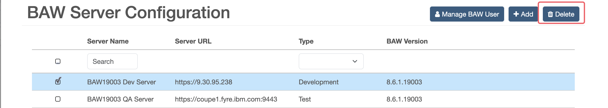
Test a BAW server
Select the Test Connection icon on the right of the BAW server that you want to test. If the test connection fails, it will pop up a warning message.
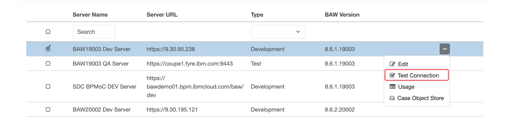
Add a user to a BAW server
-
Click the Manage BAW User icon on the right. Then you can see the BAW user list for the server.
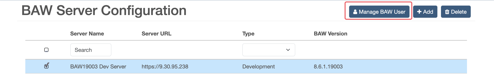
-
Click the icon on the right of BAW User Configuration. Then fill out the form below to add a new user for the server.
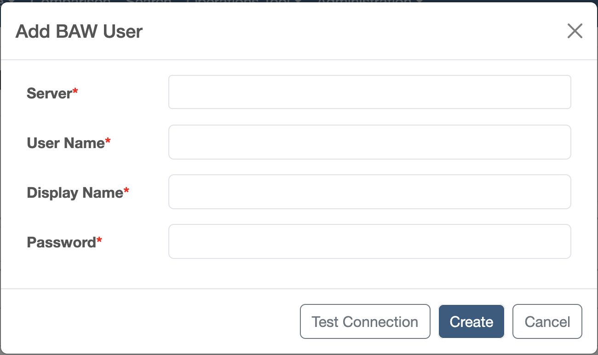
Field Description Server The BAW servers that need to add a user User Name The username of the BAW server user Display Name The display name of the BAW user User Password The password of the BAW user After adding the user, you can see the user list for this BAW server.
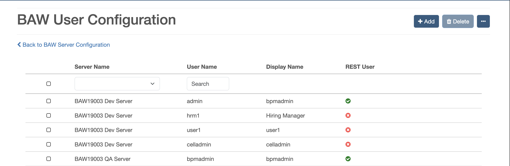
-
If the permission control of your BAW server is controlled by the UMS server, please add your UMS Admin user to IDA and set it as the UMS Admin user by following these steps:
a. Add the UMS Admin user following steps one to two.
b. Set it as the UMS Admin user:
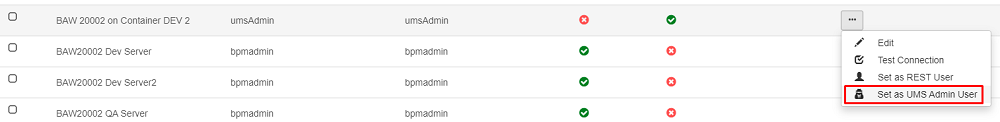
Notes: Please make sure the added user exists in your selected BAW server. Also, you need to well define the Display name of the BAW user. You can choose the Assignee display name to choose a user for the test case step command.
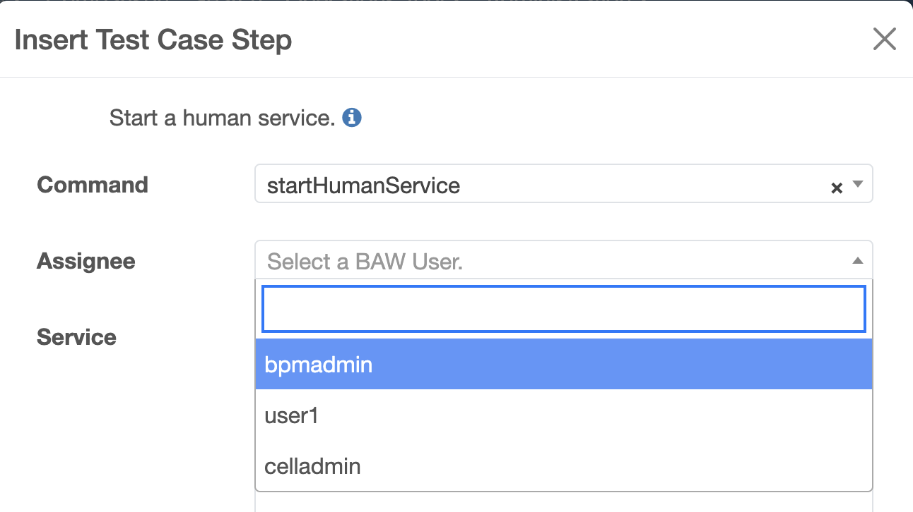
Moreover, you can also edit a BAW user in a similar way to editing a user.
Add a Case Object Store configuration to a BAW server
-
Click the Case Object Store icon on the right of the BAW server. Then you can see the Case Object Store configuration list for the server.
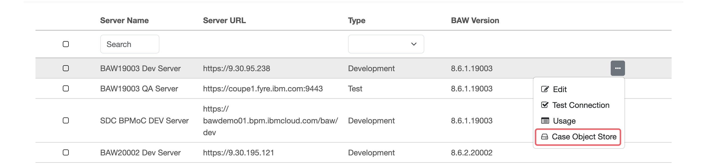
-
Click the icon on the right of Case Object Store. Then fill out the form below to add a Case Object Store configuration for the server.
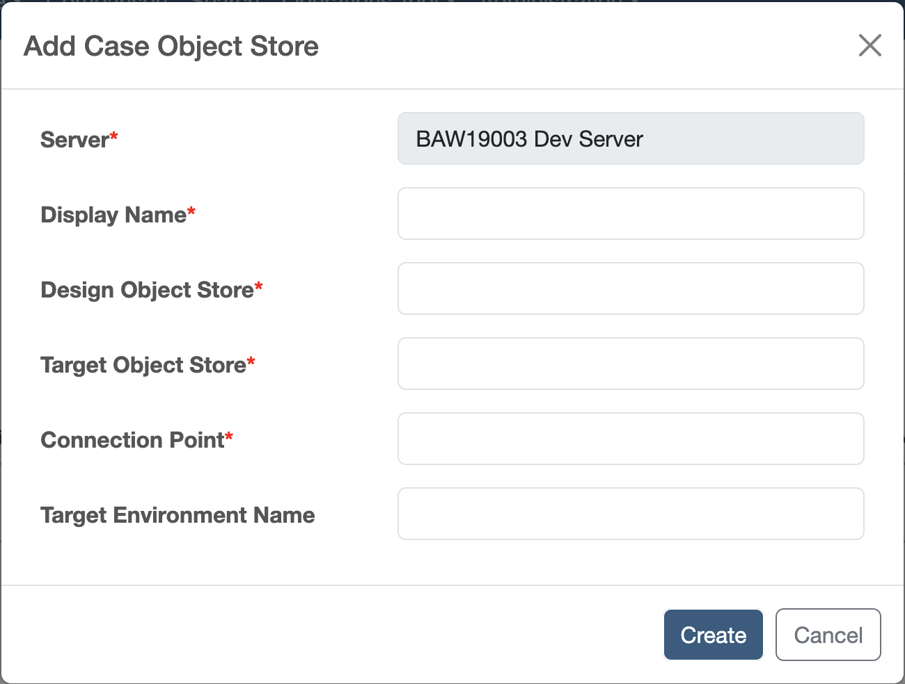
Field Description Server The display name of the BAW server Display Name The display name of the Case Object Store configuration Design Object Store The case design object store of the BAW server Target Object Store The case target object store of the BAW server Connection Point The case connection point of the BAW server Target Environment Name The case target environment name of the BAW server
If the case functions are installed by default, please refer to the default configuration information.
| Field | Workflow Center | Workflow Server | Workflow Center(Pak4BA) | Workflow Server(Pak4BA) |
|---|---|---|---|---|
| Design Object Store | dos | dos | BAWDOS | BAWINS1DOS |
| Target Object Store | tos | tos | BAWTOS | BAWINS1TOS |
| Connection Point | TOS_Default_ConnPt | TOS_Default_ConnPt | pe_conn_tosuser | pe_conn_tosuser |
| Target Environment Name | Workflow Default Target Environment | Workflow Default Target Environment |
After adding the Case Object Store, you can see the Case Object Store configuration list for this BAW server.
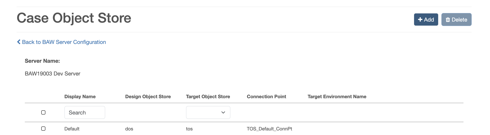
Notes: Please make sure the added Case Object Store configurations exist in your selected BAW server. Also, you need to well define the Display name of the Case Object Store. You can choose the Case Object Store display name to choose a Case Object Store configuration when you create a test project.
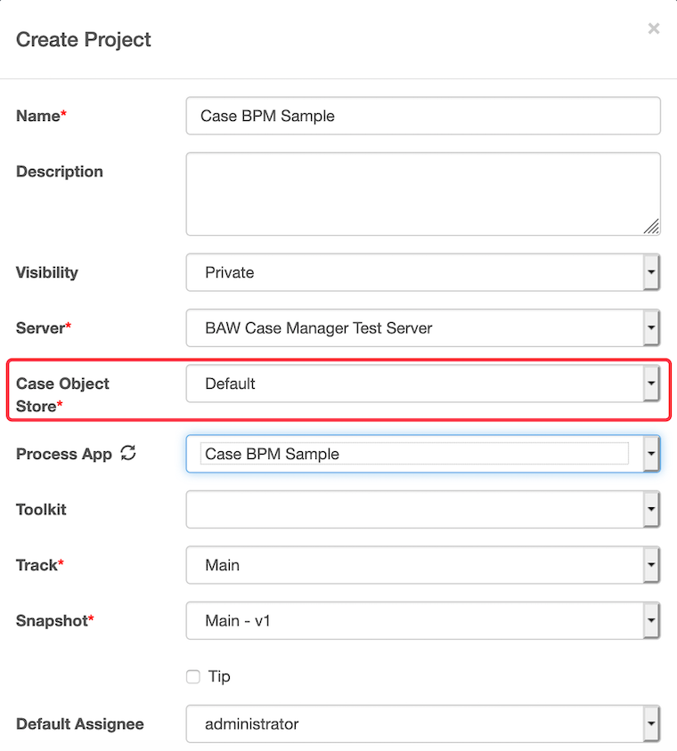
Moreover, you can also edit a case object store configuration in a similar way to editing a user.